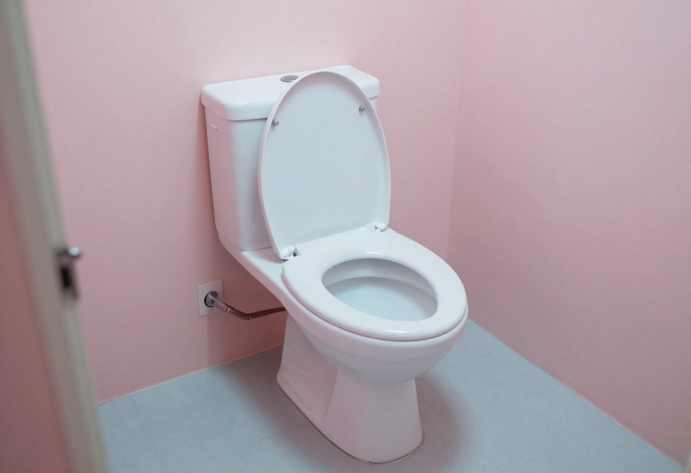

Rüyada Tuvalet Görmek Ne Anlama Gelir?
Rüyalar, bilinçaltımızın bize gönderdiği mesajlar olarak kabul edilir. Rüyada tuvalet görmek de farklı anlamlara sahip olabilir. Bu tür rüyalar genellikle kişinin ruhsal ve duygusal durumuyla ilgili önemli ipuçları verir. Peki, rüyada tuvalet görmek ne anlama gelir? İşte detaylar…
- Rüyada Temiz Tuvalet Görmek: Rüyada temiz bir tuvalet görmek, olumlu yorumlanır. Kişinin hayatında maddi veya manevi anlamda bir rahatlama yaşayacağına işaret eder. Aynı zamanda kişinin geçmişte yaşadığı sıkıntılardan kurtulacağı, ferahlığa kavuşacağı şeklinde yorumlanır.
- Rüyada Kirli Tuvalet Görmek: Kirli bir tuvalet görmek, genellikle olumsuz yorumlanır. Bu tür bir rüya, kişinin stres, kaygı veya suçluluk duygularıyla boğuştuğunu gösterebilir. Ayrıca, iş veya özel hayatında karşılaşabileceği zorluklara da işaret edebilir.
- Rüyada Tuvalete Girmek: Rüyasında tuvalete giren kişi, üzerindeki yüklerden kurtulmak istiyor olabilir. Bu rüya, kişinin içsel sıkıntılarından arınmak için bir fırsat yakalayacağına işaret eder. Eğer tuvalete girmekten çekiniyorsa, bu durum, kişinin bastırdığı duyguların veya sorunlarının yüzeye çıkmaya başladığını gösterir.
- Rüyada Tuvalet Temizlemek: Rüyasında tuvalet temizlediğini gören kişi, hayatındaki olumsuzlukları geride bırakmak için çaba gösteriyor demektir. Bu rüya, kişinin kendini arındırma sürecinde olduğunu ve yeni bir başlangıç yapmaya hazırlandığını simgeler.
- Rüyada Tuvaletin Taştığını Görmek: Bu rüya, duygusal baskı veya kontrol edilemeyen durumlarla ilişkilendirilir. Kişinin hayatında biriken stresin, patlama noktasına geldiğine ve bu durumun büyük bir sıkıntıya yol açabileceğine işaret edebilir.
- Rüyada Tuvalet Bulamamak: Rüyada tuvalet bulamamak, kişinin kendisini ifade etmekte zorlandığını, duygularını içinde tuttuğunu ve rahatlamaya ihtiyaç duyduğunu gösterir. Aynı zamanda bu rüya, kişinin çevresindeki insanlarla iletişim kurmakta zorlandığını da işaret edebilir.
Sonuç
Rüyada tuvalet görmek, genellikle kişinin duygusal, zihinsel veya fiziksel anlamda bir rahatlama ihtiyacını temsil eder. Rüyanın detaylarına göre olumlu ya da olumsuz anlamlar yüklenebilir. Ancak unutulmamalıdır ki, rüyalar kişisel deneyimlere bağlı olarak farklı şekillerde yorumlanabilir. Eğer sık sık benzer rüyalar görüyorsanız, bilinçaltınızın size vermek istediği mesajları anlamaya çalışabilirsiniz.